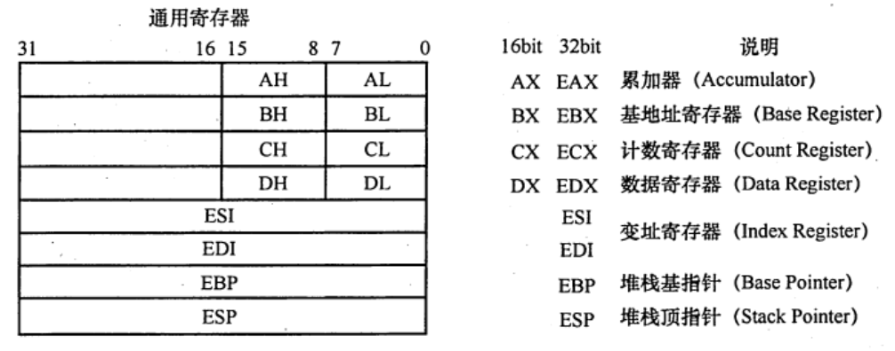
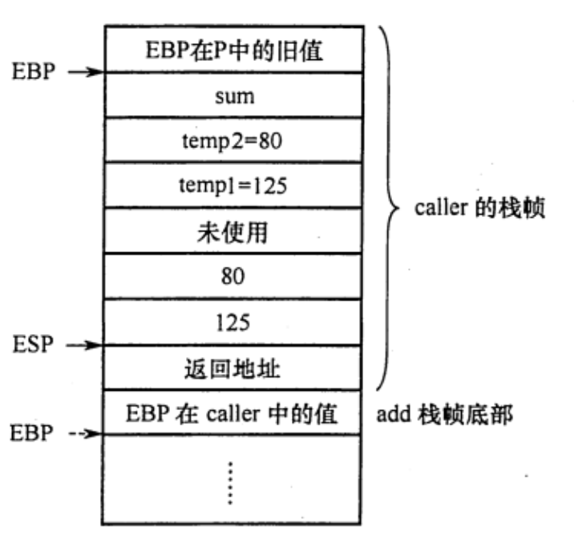
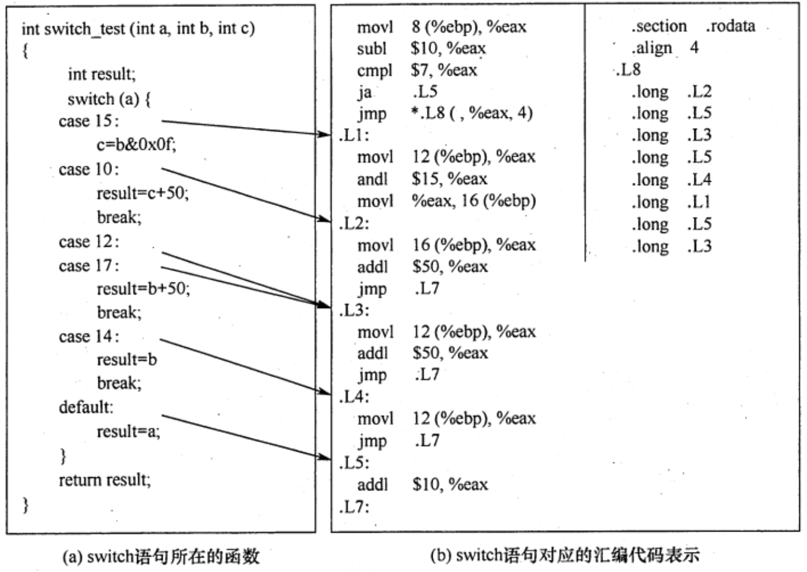
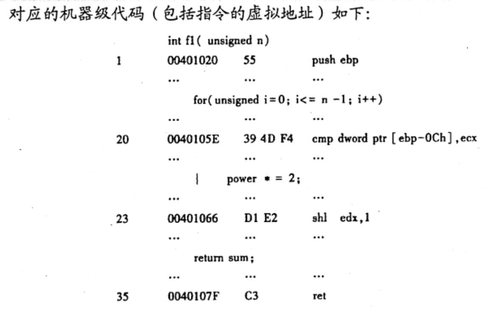
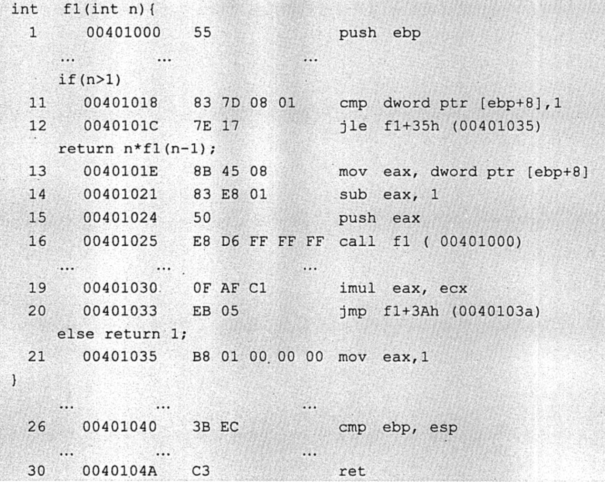

2022.08.25
switch语句每一个case都一定会有一个无条件跳转指令；
while一般最后会有一条条件跳转指令；
x86处理器中有8个32位的通用寄存器，个寄存器及说明如图所示。为向后兼容，EAX、EBX、ECX、EDX的高两位字节和低两位字节可以独立使用，E为Extended，表示32位寄存器。
例如，EAX的低两位字节称为AX，而AX的高低字节可分别作为两个8位寄存器，分别称为AH和AL。
寄存器名称与大小写无关，既可以用EAX，也可以用eax。

AT&T 和Intel两种指令格式：
| 内容 | AT&T | Intel |
|---|---|---|
| 大小写 | 只能小写 | 大小写不敏感 |
| 操作数顺序 | 源，目的 | 目的，源 |
| 前缀 | %寄存器，$立即数 | 无前缀 |
| 寻址 | () | [] |
| 指定数据长度 | 操作码+“b”/“w”/“l” | 操作码+“byte str”/“word str”/“dword str” |
案例展示：
| 含义 | AT&T | Intel |
|---|---|---|
100->R[eax] |
mov $100, %eax |
mov eax, 100 |
R[eax]->R[ebx] |
mov %eax, %ebx |
mov ebx, eax |
R[eax]->M[R[ebx]] |
mov %eax, (%ebx) |
mov [ebx], eax |
R[eax]->M[R[ebp]-8] |
mov %eax, -8(%ebp) |
mov [ebp-8], eax |
R[edx]+R[eax]*2+8->R[eax] |
lea 8(%edx, %eax, 2), %eax |
lea eax, [edx+eax*2+8] |
长度为4字节的R[eax]->R[ebx] |
movl %eax, %ebx |
mov dword ptr ebx, eax |
disp(base, index, scale)：偏移量、基址寄存器、比例因子- 汇编中的lea指令的作用，简单清晰明了不废话！
汇编指令分为数据传送指令、逻辑计算指令和控制流指令。
寄存器、内存、常数
寄存器<reg>：表示任意寄存器，其后带有数字代表位数。<reg32>（eax、ebx、ecx..），<reg16>（ax、bx、..），<reg8>（ah、al、bh、bl）...
<mem>：表示内存地址，[eax]、[var+4]、dword ptr [eax+ebx]常数con：<con8>、<con16>、<con32>
数据传送指令
mov指令：把第二个操作数复制到第一个操作数那里。注意⚠️不能用于直接从内存复制到内存
mov <reg>, <reg>
mov <reg>, <mem>
mov <mem>, <reg>
mov <reg>, <con>
mov <mem>, <con>
; 举例
mov eax, ebx
mov byte ptr [var], 5
push <reg32>
push <mem>
push <con32>
; 举例，占中元素固定为32位
push eax
push [var] ;将var值指示的内存地址的4字节值压栈
pop edi
pop [ebx]
算数和逻辑运算指令
add/sub指令：结果保存在第一个操作数中
add <reg>, <reg>
add <reg>, <mem>
add <mem>, <reg>
add <reg>, <con>
add <mem>, <con>
;sub同理
inc <reg>
dec <reg>
inc <mem>
dec <mem>
imul <reg32>, <reg32>
imul <reg32>, <mum>
imul <reg32>, <reg32>, <con>
imul <reg32>, <mem>, <con>
idiv <reg32>
idiv <mem>
and <reg>, <reg>
or <reg>, <mem>
xor <mem>, <reg>
not <reg>
not <mem>
neg <reg>
neg <mem>
shl <reg>, <con8>
shl <mem>, <con8>
shl <reg>, <cl>
shl <reg>, <cl>
; shr同理
x86处理器维持着一个指示当前指令的指令指针（IP），当一条指令执行后，此指针自动指向下一条指令。IP寄存器不能直接工作，但可以用控制流指令更新。通常用标签（label）指示程序中的指令地址，在x86汇编代码中，可在任何指令前加入标签。
jmp <label>
je <label> ;jump when equal
jne <label> ;jump when not equal
jz <label> ;jump when last result was zero
jg <label> ;jump when greater then
jge <label> ;jump when greater than or equal to
jl <label> ;jump when less than
jle <label> ;jump when less than or equal to
cmp <reg>, <reg>
cmp和test指令通常和jcondition指令搭配使用，举例
;将var指示的主存地址的4字节内容，与10比较
cpm dword ptr [var], 10
;如果相等则继续顺序执行，否则跳转到loop处执行
jne loop
;测试eax是否为0
test eax, eax
;为0则置标志ZF为1，跳转到xxxx处执行
jz xxxx
call <label>
ret
【2】是由call指令实现的，【6】是由ret指令返回到过程P。上述过程中，用户可见的寄存器数量有限，为此需要设置专门一个存储区来保存这些数据，这个存储区就是【栈】。每个过程都有自己的栈区，称为【栈帧】，帧指针寄存器EBP指示栈帧的起始位置（栈底），栈指针寄存器ESP指示栈顶，栈从高地址向低地址增长，因此当前栈帧的范围在帧指针EBP和ESP指向的区域之间。
int add(int x, int y){
return x+y;
}
int caller(){
int temp1 = 125;
int temp2 = 80;
int sum = add(temp1, temp2);
return sum;
}
经过GCC编译后：
push ebp
mov ebp, esp
sub ebp, 24
mov [ebp]-12, 125 ; temp1 = 125
mov [ebp]-8, 80 ; temp2 = 80
mov eax, [ebp]-8 ; R[eax]=temp2
mov [esp]-4, eax ; temp2入栈
mov eax, [ebp]-12 ; R[eax]=temp1
mov [esp], eax ; temp1入栈
call add
mov [ebp]-4, eax ; add返回值送sum
mov eax, [ebp]-4 ; sum作为caller返回值
leave
ret

if(test_expr)
then_statement
else
else_statement
t = test_expr;
if(!t)
goto false;
then_statement;
goto done;
false:
else_statement
done:
int get_cont(int *p1, int *p2){
if(p1>p2)
return *p2;
else
return *p1;
}
movl eax,[ebp+8] ; R[eax]=p1
movl edx,[ebp+12] ; R[edx]=p2
cmpl eax,edx ; 比较p1，p2，根据结果置标志
jbe .L1 ; 如果p1≤p2
movl eax, [edx] ; R[eax]=M[p2]
jmp .L2 ; 无条件跳转到L2
.L1:
movl eax,[eax] ;R[eax]=M[p1]
.L2:

do
body_statement
while(test_expr);
loop:
body_statement
t=test_expr;
if(t)
goto loop;
while(test_expr)
body_statemnet
t=test_expr;
if(!t)
goto done;
do
body_statement;
while(test_expr);
t=test_expr;
if(!t)
goto done;
loop:
body_statement
t = test_expr;
if(t)
goto loop;
done:
for(init_expr;test_expr;update_expr)
body_statment
init_expr;
while(test_expt){
body_statement
update_expt;
}
init_expt;
t=test_expt;
if(!t)
goto done;
loop:
body_statement
update_expt;
t=test_expr;
if(t)
goto loop;
done:
R[ax]=FFE8H，R[bx]=7FE6H，执行指令addw %bx, %ax后，寄存器的内容和标志的变化为（ ）A. R[ax]=7FXEH，OF=1，SF=0，CF=0，ZF=0
B. R[bx]=7FXEH，OF=1，SF=0，CF=0，ZF=0
C. R[ax]=7FXEH，OF=0，SF=0，CF=1，ZF=0
D. R[bx]=7FXEH，OF=0，SF=0，CF=1，ZF=0
【答案】：C $$ \begin{align} 1111,1111,1110,1000&\ 0111,1111,1110,0110&\ ----------&\ 1,0111,1111,1100,1110& \end{align} $$
R[ax]=7FE6H，R[bx]=FFE8H，执行指令sub bx, ax后，寄存器的内存和个标志的变化A. R[ax]=8002H，OF=0，SF=1，CF=0，ZF=0
B. R[bx]=8002H，OF=0，SF=1，CF=0，ZF=0
C. R[ax]=8002H，OF=1，SF=1，CF=0，ZF=0
D. R[bx]=8002H，OF=1，SF=1，CF=0，ZF=0
【答案】：B $$ \begin{align} 1000,1111,1110,0110=1111,0000,0001,1010&\\ 1111,1111,1110,1000&\ 1111,0000,0001,1010&\ ----------&\ 1,1111,0000,0000,0010& \end{align} $$
【答案】：231654
int f1(unsigned n){
int sum=1,power=1;
for(unsigned i=0;i<=n-1;i++){
power *= 2;
sum += power;
}
return sum;
}

其中，机器级代码包括行号、虚拟地址、机器指令和汇编指令
计算机M是RISC还是CISC？为什么？
【答案】：是CISC，因为指令长短不一致，不满足RICS的标准
f1的机器指令代码共占多少字节？求计算过程
【答案】：0040107F-00401020=80+15=95❌，还要加上最后ret的一个字节，答案是96B
第20条指令cmp通过i减n-1的比较。执行f1(0)的过程中，当i=0时，cmp指令执行后，借位/进位标志CF的内容是什么？要求给出计算过程
【答案】：i=0时，i=0000,0000H和n-1=FFFF,FFFFH比较。0000,0000-FFFF,FFFF= 0000,0000+0000,0000+1=0000,0001H，输出C=0，CF=C异或1=1.CF=1
第23条指令shl通过左移实现了power*2运算，在f2中能否用shl实现power*2？为什么？
【答案】：不能。因为shl把一个整数的所有有效为左移。而f2中的变量power时float型，其计其数不包含最高有效数位，但包含了阶码部分，将其作为一个整体左移不能实现乘2
【2019 统考真题】已知$f(n)=n!$，计算f(n)的C语言函数f1的源程序（阴影部分）及其在32位计算机M上的部分机器及代码如下

其中，机器级代码包括行号、虚拟地址、机器指令和汇编指令，计算机M按字节编址，int型数据占32位，请回答下列问题：
计算f(10)需要调用函数f1多少次？执行哪条指令会递归调用f1？
【答案】：10次，16
上述代码中，哪条指令是条件转移指令？那几条指令一定会是程序跳转执行？
【答案】：条件12，一定16，20，30
根据第16行的call指令，第17行指令的虚拟地址应是多少？已知第16行的call指令采用相对寻址方式，该指令中的偏移量应是多少？已知第16行的call指令的后4字节为偏移量，M是采用大端方式还是采用小端方式？
【答案】：0040102A，-2A=1000,0000,0010,1010=1111,1111,1101,0110=FFD6->小端
f(13)=6227020800，但f(13)的返回值为1932053504，为什么两者不相等？要使f1(13)返回正确结果。如何修改f1程序？
【答案】：因为超过了int类型最大表示范围，应该换成long long int或double
【2019统考真题】对于题10，若计算机 M 的主存地址为 32位，采用分页存储管理方式，页大小为4KB，则第1行的push指令和第30行的ret 指令是否在同一页中（说明理由）？若指令Cache 有64行，采用4 路组相联映射方式，主存块大小为 64B，则32位主存地址中，哪几位表示块内地址？哪几位表示 Cache组号？哪几位表示标记(tag）信息？读取第16行的call 指令时，只可能在指令 Cache 的哪一组中命中（说明理由）？
【答案】：【再看】